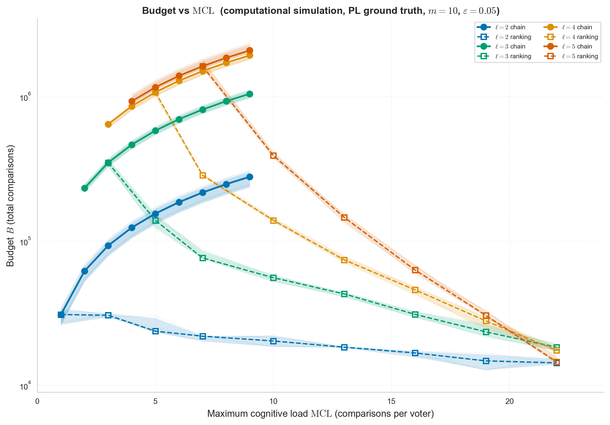
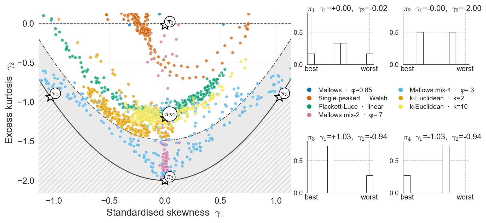
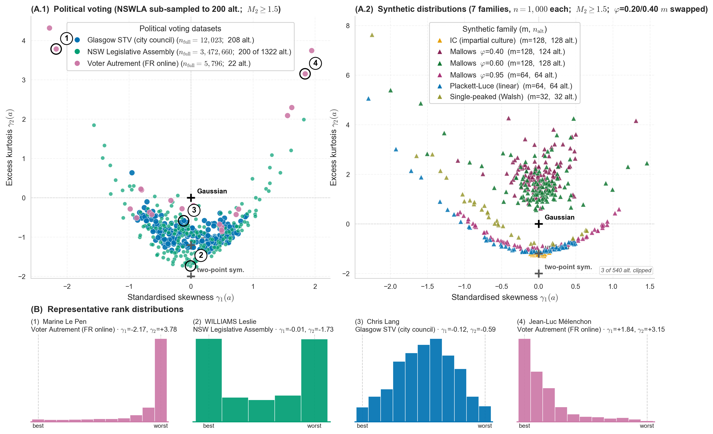

Mohamed Ouaguenouni1, Felipe Garrido-Lucero1, Umberto Grandi1, César Hidalgo2,3,4, Magdalena Tydrichova5
1. IRIT, Université Toulouse Capitole, Toulouse, France
2. Center for Collective Learning, IAST, Toulouse School of Economics, France
3. Center for Collective Learning, CIAS, Corvinus University of Budapest, Hungary
4. AMBS, University of Manchester, UK 5. Centrale Supélec, Paris Saclay, France
Théorie Algorithmique de la Décision et des Jeux (TADJ) · 21 June 2026
Motivation
Most of social choice asks one question: given the votes, which alternative wins?
Motivation
Agreement is half the story. A population also has to face its disagreements.
On Pol.is, the proposals with the narrowest margins are surfaced next to the consensual ones.
Motivation
Some disagreement is structural: the population splits into camps.
Identifying that structure is the goal.
The tension
This talk
Two questions, treated together:
Concepts and notation
Alternatives. A finite set \(\mathcal{A}=\{a_1,\dots,a_m\}\), with \(m \geq 3\).
Concepts and notation
Voter. A strict ranking \(\succ\) of \(\mathcal{A}\).
For example \(a \succ b \succ c\): \(a\) first, \(c\) last.
Concepts and notation
Profile. A distribution \(\pi\) over the \(m!\) rankings.
Example over \(\{a,b,c\}\): \(\quad \pi = \tfrac12\,(a \succ b \succ c) + \tfrac12\,(c \succ b \succ a)\).
Concepts and notation
Definition (rank).
\[ r_a \;:=\; 1 + |\{\, b \neq a : b \succ a \,\}| \]
The position of \(a\) in a voter's ranking; \(r_a = 1\) means first.
Key shift
An alternative does not have one rank.
Across voters, \(a\) holds a distribution of ranks, \(\Pr[r_a = i]\).
Pairwise data
For two alternatives, \(\;p_{xy} := \Pr[x \succ y]\).
The aggregate of all pairwise comparisons. The standard, low-cost query.
All pairwise proportions coincide: \(\;\; p_{ab}=p_{ba}=p_{ac}=p_{ca}=p_{bc}=p_{cb}=\tfrac12\).
Now look at the rank of one alternative \(a\). It can be distributed as:
All pairwise proportions coincide: \(\;\; p_{ab}=p_{ba}=p_{ac}=p_{ca}=p_{bc}=p_{cb}=\tfrac12\).
Now look at the rank of one alternative \(a\). It can be distributed as:
Same pairwise data, opposite rank structure.
To see the difference, we need data that lives above the pairwise level.
For a subset \(S\) and \(a \in S\):
\[ p_S^{\pi}(a) \;:=\; \Pr_\pi(a \text{ is ranked first within } S) \]
Group the rows by subset size \(|S|\).
No degree can be recovered from another.
A statistic has level \(k\) when degree \(\leq k\) data expresses it, and degree \(\leq k-1\) does not.
The smallest subset size needed to compute it.
| \(\mathcal{S}\times\mathcal{A}\) | a | b | c |
|---|---|---|---|
| {a,b} | 1/2 | 1/2 | · |
| {a,c} | 1/2 | · | 1/2 |
| {b,c} | · | 1/2 | 1/2 |
| {a,b,c} | 1/3 | 1/3 | 1/3 |
| \(\mathcal{S}\times\mathcal{A}\) | a | b | c |
|---|---|---|---|
| {a,b} | 1/2 | 1/2 | · |
| {a,c} | 1/2 | · | 1/2 |
| {b,c} | · | 1/2 | 1/2 |
| {a,b,c} | 1/2 | 1/2 | 0 |
Degree 2: identical. Degree 3: different.
Three measures
Agreement index \(A(\pi)\): how far each pair is from a tie, averaged.
\[ A(\pi) = \tbinom{m}{2}^{-1}\!\!\sum_{\{x,y\}} \big|\,2\,p_{xy}-1\,\big| \]
Level 2.
Three measures
Rank variance of \(a\): how much its rank moves across voters.
\[ \mathrm{Var}(a) = \mathbb{E}\big[(r_a - \mathbb{E}[r_a])^2\big] \]
Level 3.
Three measures
Divisiveness of \(a\): split the voters on each pair \((a,b)\), then compare how high \(a\) ranks on average (its Borda score) in the two camps.
Level 3.
Rank variance and divisiveness are level 3.
Pairwise comparisons alone cannot recover them.
Level \(\ell\) = what \(\ell\)-wise data tells you about the rank distribution.
Hierarchy
Pairwise data fixes the mean rank:
\[ \mathbb{E}[r_a] = m - \mathrm{Bor}(a) \]
The Borda score is a level-2 measure.
Hierarchy
Pairwise data fixes the mean, and nothing above it.
The variance already needs degree 3.
\[ M_k(a) = \mathbb{E}\big[(r_a - \mathbb{E}[r_a])^k\big] \]
\(M_k\) is a measure of level \(k+1\).
Reading the moments
Skewness \(\gamma_1\): asymmetry of the rank distribution.
Level 4.
Reading the moments
Excess kurtosis \(\gamma_2\): tail extremity, the tendency to produce outliers.
Level 5.
\((\gamma_1, \gamma_2)\) is a two-dimensional summary of the rank distribution.
No level-2 or level-3 measure can capture it.
For every \(k \geq 2\), there are two profiles \(\pi, \pi'\) with
\( p_S^{\pi}(a) = p_S^{\pi'}(a)\) for all \(|S| \leq k\), yet they differ at some \(|T| = k+1\).
No measure of level \(k\) tells them apart.
Down for the proof sketch.
Backup · proof sketch
Set \(m = d+2\) (the separating degree \(d\) plays the role of \(k\)). Profile \(\pi_w\): draw \(r_a\) from a distribution \(w\) on positions, place the rest uniformly.
\[ p_S^{\pi_w}(a) = \sum_{j=1}^{m} w_j\,\frac{\binom{m-j}{\,s-1}}{\binom{m-1}{\,s-1}} \]
Linear in \(w\), depending on \(S\) only through \(s=|S|\). Matching up to degree \(d\) is \(d\) equations of distinct polynomial degree (rank \(d\)); the degree-\((d{+}1)\) separation is a degree-\(d\) polynomial, not implied.
Witness \(d=3,\,m=5\): \(w\) uniform, \(w'=\tfrac{1}{20}(3,7,1,5,4)\). Then \(p_S(a)=1/|S|\) for \(|S|\in\{2,3\}\); at \(|S|=4\), \(1/4\) versus \(19/80\).
Every level is occupied.
The \(k\)-central moment is a measure of level exactly \(k+1\).
Under Plackett-Luce (latent strengths) or single-peaked (options on a line) preferences, every degree is a function of degree 2.
The hierarchy collapses to level 2.
Single-peaked needs the axis known in advance; Plackett-Luce needs only pairwise comparisons.
Estimate every entry to accuracy \(\varepsilon\) with probability \(1-\delta\).
Degree 2 is just pairwise comparisons. Degree \(\geq 3\) needs a richer query.
Primitive
\(k\)-chain. Compare \(a_1, a_2\), then the running winner against each next alternative.
\(\;|S|-1\) pairwise comparisons. Lowest cognitive load.
Primitive
\(k\)-ranking. Rank the whole subset \(S\).
\(\;\Theta(k \log k)\) comparisons. By transitivity, a ranking of \(S\) fixes the winner of every subset: \(\binom{|S|}{k}\) samples at each degree \(k\).
For a protocol of length \(N\) with \(c_j\) comparisons at step \(j\):
\( B = \sum_{j} c_j \qquad \mathrm{MCL} = \max_j c_j \)
Down for the budget derivation.
Backup · budget
Degree-\(k\) entries: \(Q_k = k\binom{m}{k}\). Per-entry samples (Hoeffding + union bound): \(T_k = \dfrac{\ln(2Q_k/\delta)}{2\varepsilon^2}\).
Backup · sampling without replacement
Each voter answers once, so samples are drawn without replacement. Serfling sharpens Hoeffding:
\( T_\ell' = T_\ell\,\dfrac{n+1}{n+T_\ell} \).
When \(n \geq N_{\mathrm{chain}}\) the reduction stays below \(2\%\) once \(\binom{m}{\ell}\geq 50\), so the paper keeps the Hoeffding bound.
At a fixed budget, comparisons per voter trade off against the number of voters.
Chains and rankings sit at the two ends.
A limit
Any protocol that reaches degree \(k\) needs \(\mathrm{MCL} \geq k-1\).
Chains achieve it. So a level-3 measure forces at least one voter to compare three alternatives jointly.

Two regimes on one frontier.

Synthetic data

Real data
Real elections fill the whole moment plane.
The plane separates high-disagreement alternatives that rank variance alone would merge.
Caveat: only voters who gave complete rankings are plotted, which over-represents the most engaged.
Limitations
Ahead
Top-\(k\) lists, approval ballots, partial orders.
Bayesian variants with priors over noise and load.
Questions welcome.